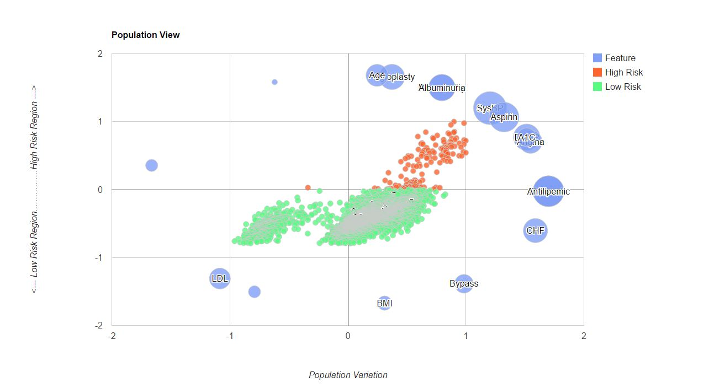
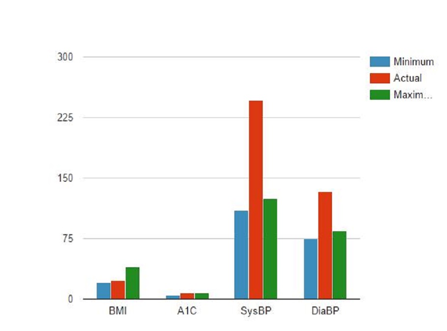
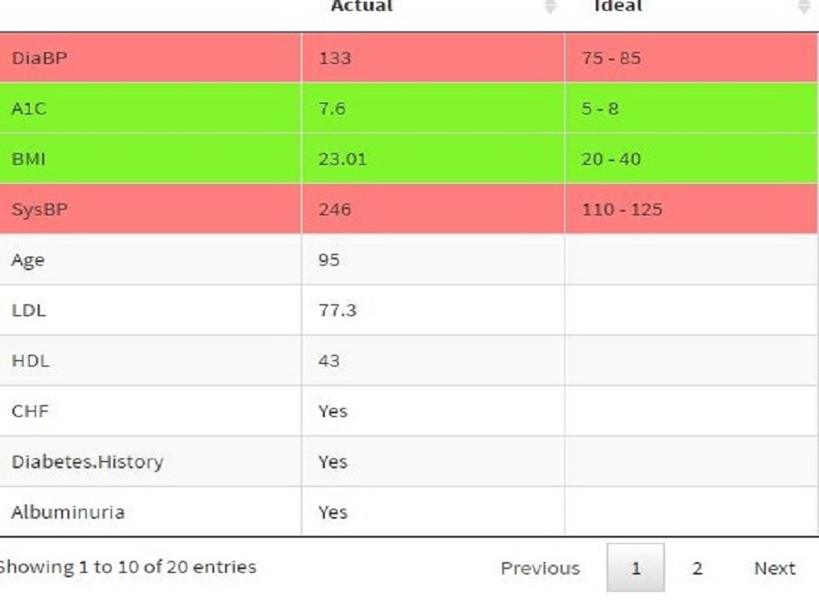
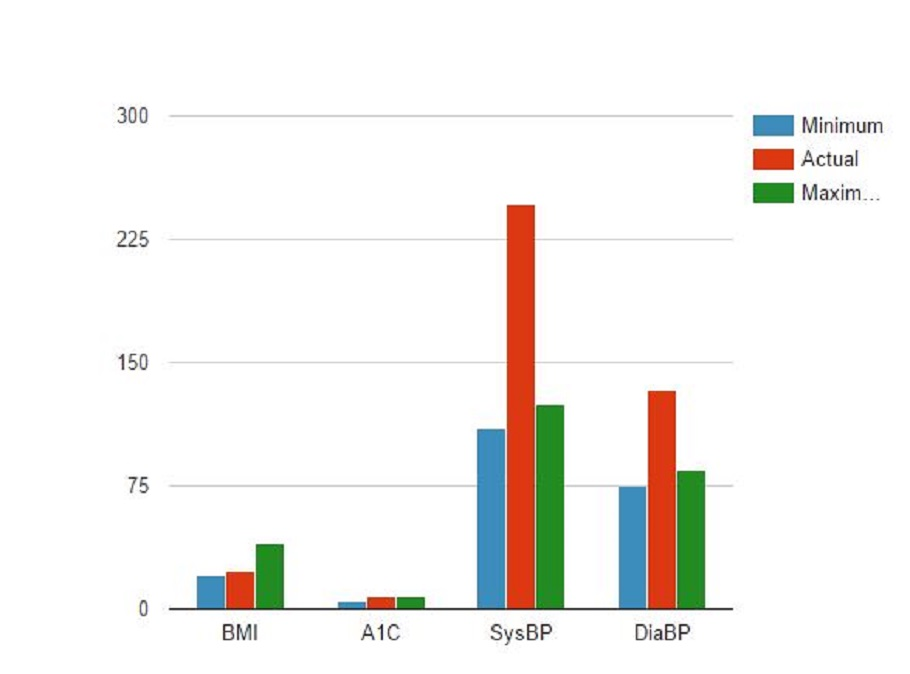
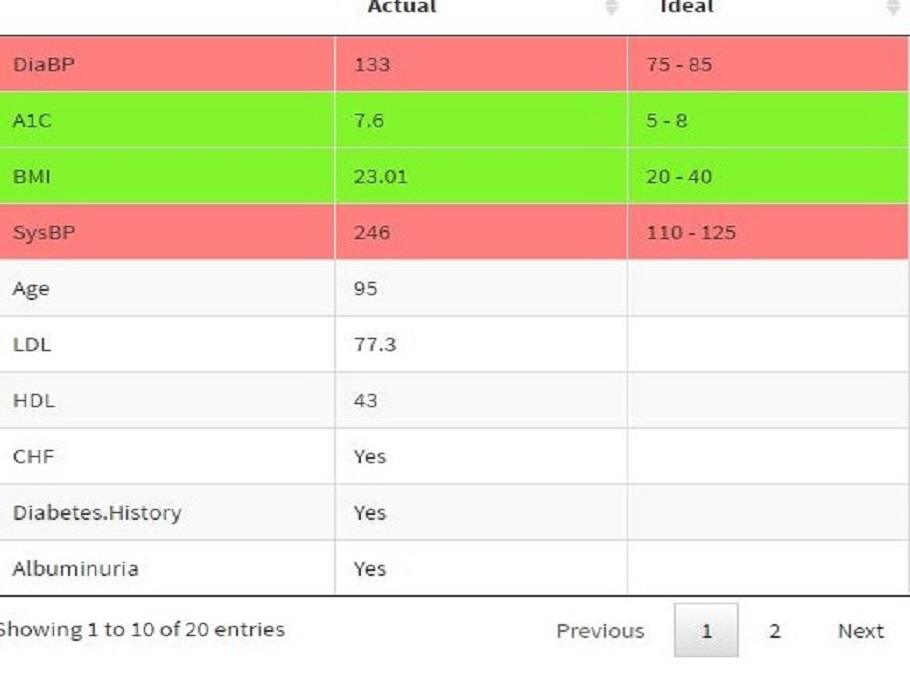
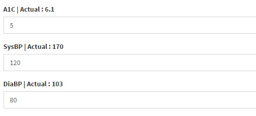
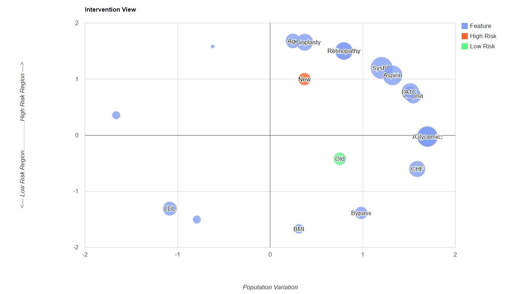

About
DViz is a broadly applicable data visualization tool to help assess disease risk and explore related interventions that may be the most appropriate for a patient. It integrates statistical dimensionality reduction methods with information visualization. The tool is currently designed to help clinicians quickly, easily and visually understand their patients.
Problem
Assessing and responding to patients' risk are complex, high-dimensional information processing problems faced by time-constrained clinicians. It is hard for a doctor to effectively manage their patients and prioritize the high risk ones. A more proactive approach might help identify complications in advance leading to better care.
Solution
Innovative algorithms and tools which combine statistical machine learning, information visualization and electronic health data may reduce clinicians' information processing load and improve their ability to assess risk of disease onset and related complications. A critical element in visualization is the incorporation of flexibility in customizing assessments to the needs of unique patient populations.
Data
We conducted a preliminary study to evaluate computationally driven visualization techniques for improving risk assessment using high dimensional data on 8,611 patients with diabetes.
Results
We have built a tool that uses tecnhiques of dimensionaly reduction along with information visualization.It has the following features:
-
Populaton View
This visualization gives the risk distribution of the entire population. The values higher on the y axis indicate higher risk. The positioning of features follows an attraction metaphor that patients with a high risk due to a feature are placed close to that feature.
 -
Patient View
The patient view aids understanding individual patient better. In addition to highlighting the patent in the entire population, it highlights those features that stand out for that patient. It also provides comparison of ideal and actual values for the features highlighting those features that are out of the ideal range.
 



-
Intervention View
Once a patient is identified to be at high risk, intervention view allows to visualize the impact of an individual intervention or a combination of interventions to identify the amount of risk reduction to help prioritize treatments.
 